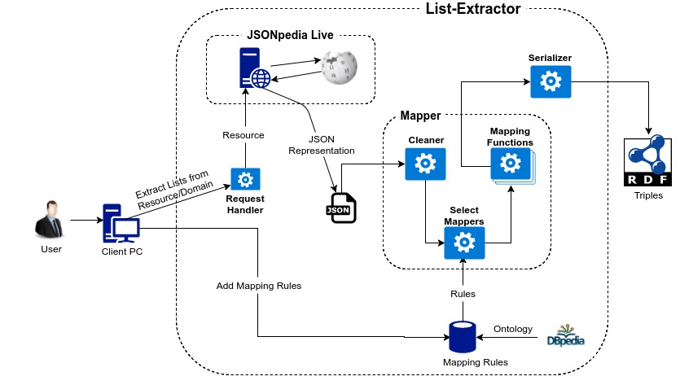

About the Extraction¶
The List-Extractor is a tool that can extract information from wikipedia lists and form appropriate RDF triples.
Abstract¶
Wikipedia, being the world’s largest encyclopedia, has humongous amount of information present in form of text. While key facts and figures are encapsulated in the resource’s infobox, and some detailed statistics are present in the form of tables, but there’s also a lot of data present in form of lists which are quite unstructured and hence its difficult to form into a semantic relationship. This project focuses on the extraction of relevant but hidden data which lies inside lists in Wikipedia pages. The information is unstructured and thus cannot be easily used to form semantic statements and be integrated in the DBpedia ontology. Hence, the main task consists in creating a tool which can take one or more Wikipedia pages with lists within as an input and then construct appropriate mappings to be inserted in a DBpedia dataset.
Introduction¶
The main concept behind List Extractor is about using the information we have about lists in the Wikipedia page in order to select a suitable rule/property to form RDF statements. This is very important since the list itself, because of its very nature, doesn’t carry any metadata about the information that it is expressing. To overcome this obstacle, we exploit the information carried by the list section headers and by the type of the resource (obtained from querying a DBpedia SPARQL endpoint). This means that knowing the resource type and analyzing the section title, we can decide for a certain mapping function to be applied to each list element. The resources(s) are retrieved, processed, and then passed through mapper functions, which generate the RDF triples.
Structure¶
Below is the process architecture that is followed by the List-Extractor:
The Extractor has 3 main parts:
Request Handler:
Selects the resource(s) depending on the user’s options and makes corresponding resource requests to the JSONpedia service for list data.
JSONpedia Service:
JSONpedia Service provides the resource’s information in a well-structured JSON format, which is used by the mapping functions to form appropriate triples from the list data. Previously, JSONpedia Live was being used, which is a web-service and is hence susceptible to be overloaded by large volume of requests. To overcome this bottleneck, the JSONpedia Library is now being used instead of the Live service.
Mapper:
This is the set of modules which use the JSON recieved from the JSONpedia Service and produce appropriate triples which can be serialized. The first part is cleaning the JSON dictionary to extract only meaningful list data. This data is then passed to a mapping_selector method, which using the rules present in the
settings.json, which are formed in accordance to the DBpedia Ontology, selects the mapping functions that are needed to be applied to the elements. The mapping functions then form appropriate triples, which are then serialized into a RDF graph.